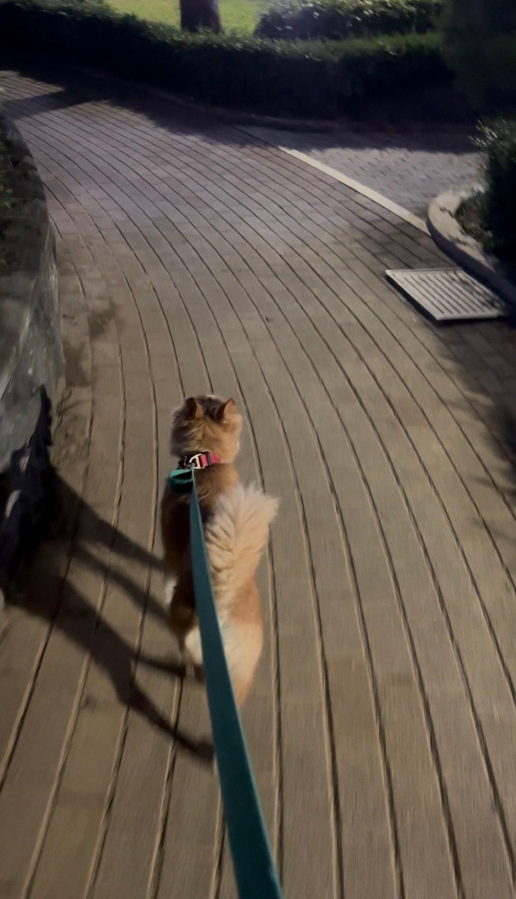
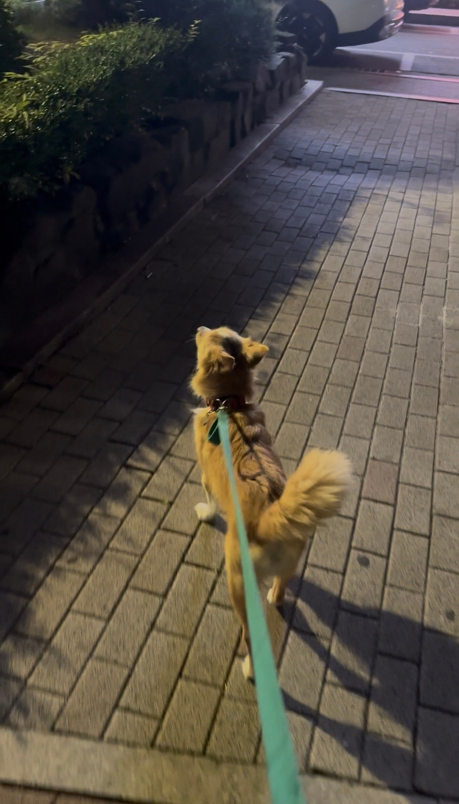

야외배변을 하는 설탕이를 위해 하루 두번 산책!!!!!


낮에 산책한번~ 밤에 산책한번~야외배변을 하는 설탕이를 위해꾸준히 하루 두번씩 산책해주고있어요파양전에는 세번이상 했다는데여기는 아이들이 많아서 설탕이만 할 수 없기에ㅠㅠ미안하지만 두번씩 밖에 못해주고 있어요설탕이가 너무 귀여운게아스팔트나 보도블럭에서는 절때 배변을 안해요꼭 흙이 있어야만 배변을 하더라구요 ㅎㅎ신기해요.. 이런 아이들보면정말 똑똑하구나 느낀답니다


밤에 하는 산책도 너무너무 잘하는 울 설탕이밤공기 킁킁 냄새 맡으며도도하게 도도도도 걸어가는 모습을 보면신이 났구나 생각이 들어요얼른 좋은 가족 찾아줄게 설탕이~~0505-464-1004
댓글 16
낮 산책이랑 밤 산책이 둘 다 있는 글이라 사진이 더 이해돼요.
좋은 가족만 만나자.
파양 전 루틴을 아는 글이라 설탕이가 더 대견해 보여요.
따뜻한 집에서 오래오래 사랑받길.
낮에 한 번, 밤에 한 번. 제목 그대로의 일기네요.
좋은 인연이 빨리 나타났으면.
설탕이, 배변 장소를 가린다는 소개가 사진 속 걸음이랑 연결돼요.
꼭 좋은 데로 가세요.
밤에 더 잘한다는 설탕이, 도도한 실루엣이 그 말 맞아요.
설탕이, 좋은 사람만 만나자.
야외 배변을 하는 설탕이라 하루 두 번 산책한다는 글이 사진이랑 같아요.
가족 되는 날이 하루라도 빨리 오면 좋겠어요.
도도도도 걸어가는 모습이라는 표현에서 웃음이 났어요.
설탕이 얼른 좋은 가족 만나 예전처럼 자주 나가면 좋겠어요.
파양 전에는 세 번 이상이었다는 이야기 읽고 마음이 쓰여요.
신이 났구나 싶은 밤 산책, 글이 사진을 설명해 줘요.